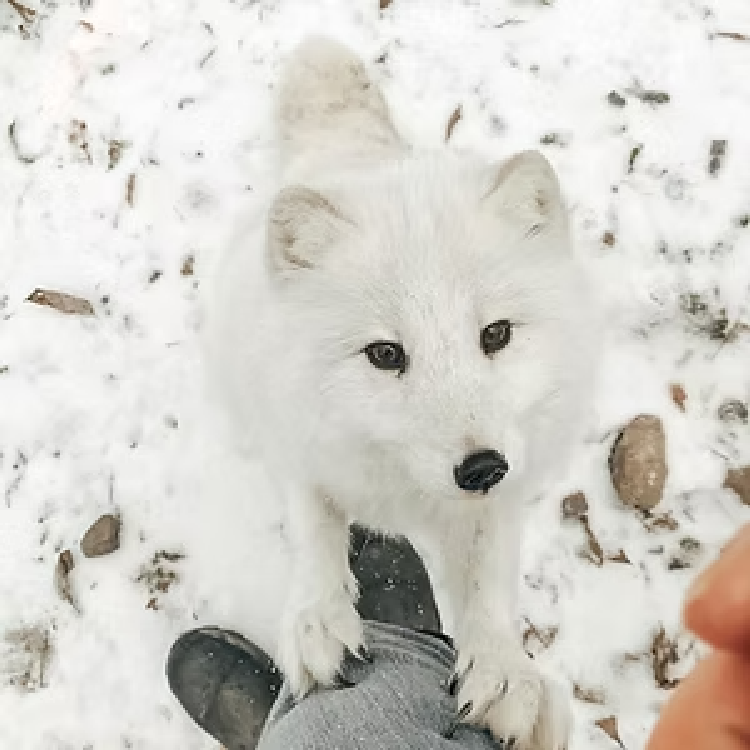
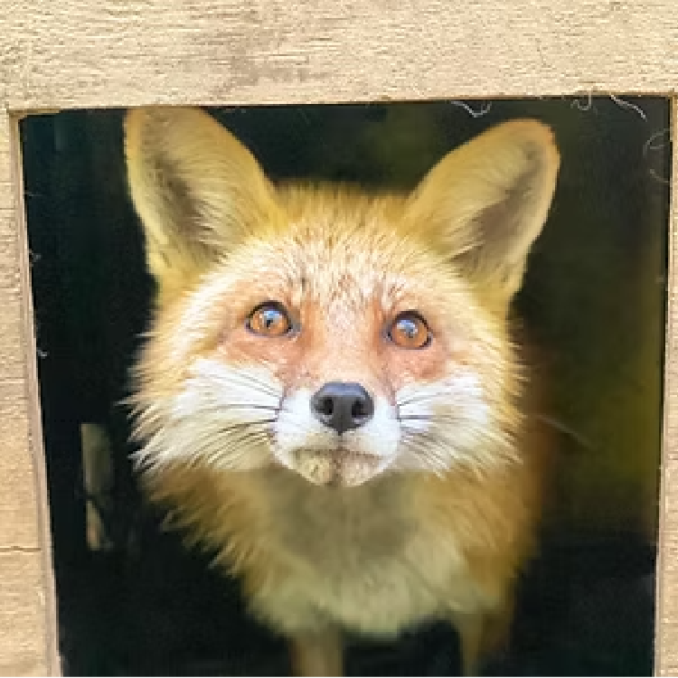
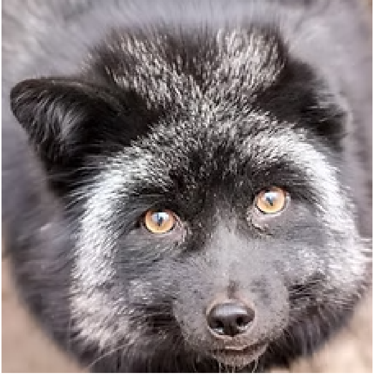
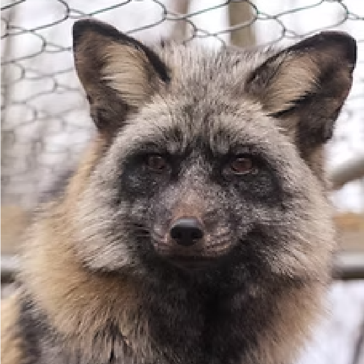
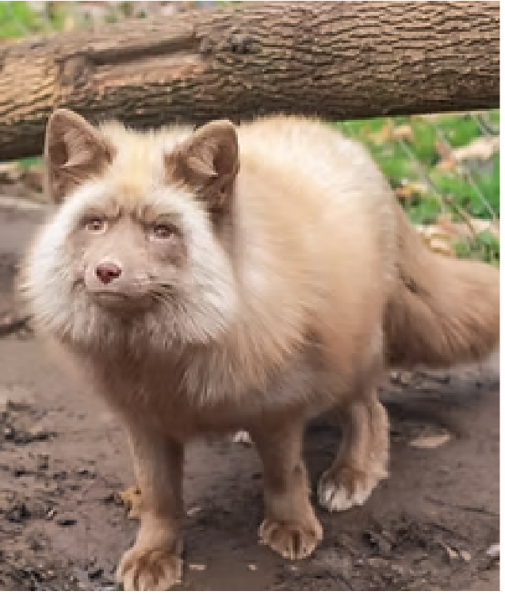
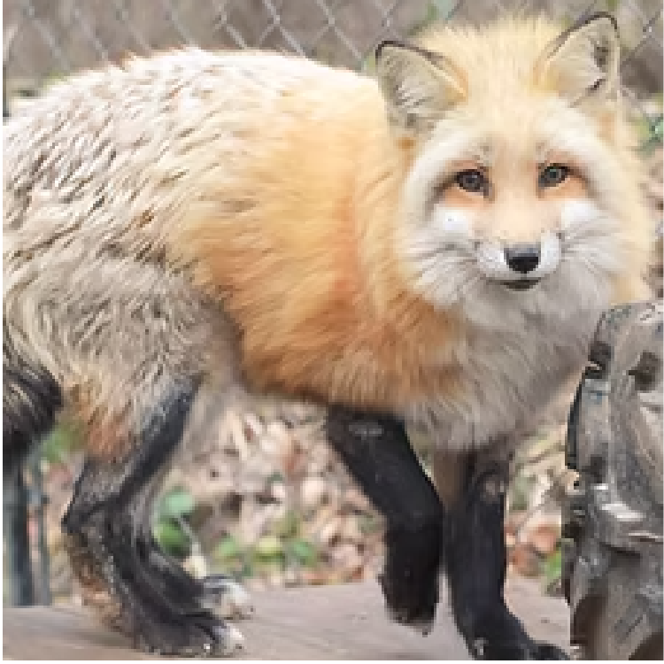
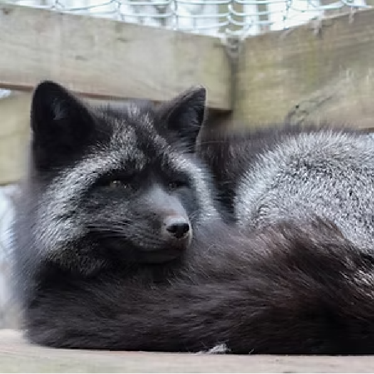
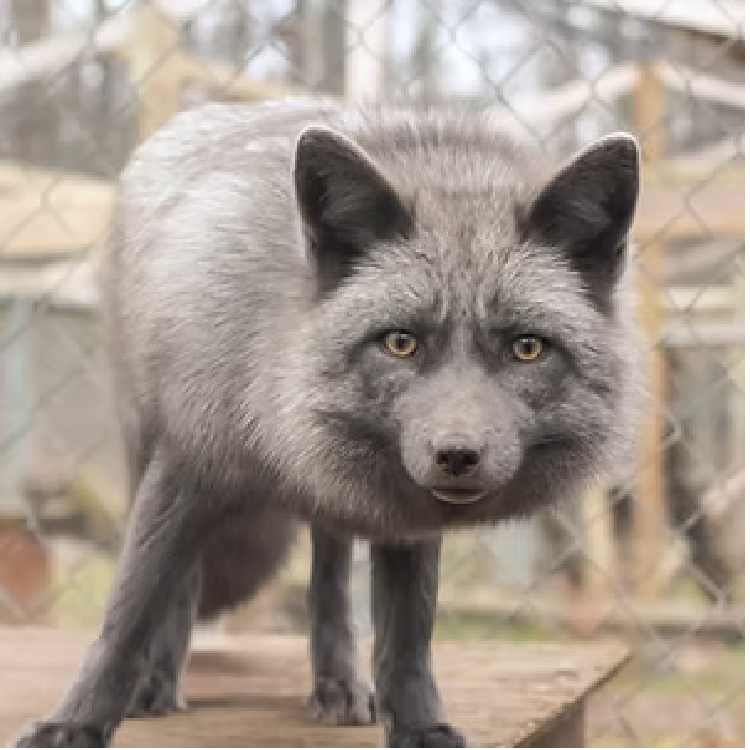
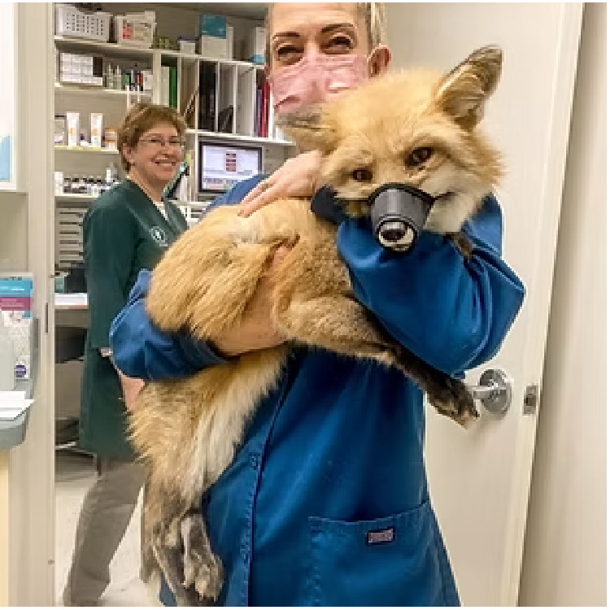
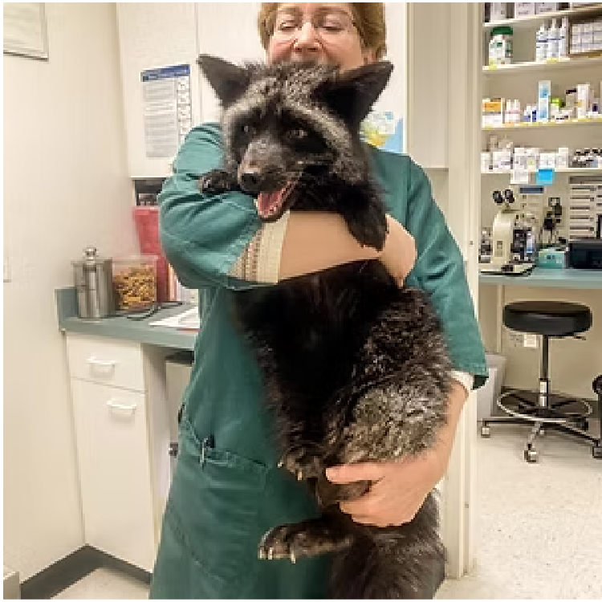

We have several new residents whose bios aren't on our website yet, be sure to check social media for the most up-to-date content!
Story 1: Toto
Captive-born Arctic Fox (The Catalyst of Arctic Fox Daily) - Rest in Paradise my Toto Bear, 2021-2022
Toto was the original fox - the "OG" guy - who started this all: This is far older than someone would normally purchase a fox for a companion animal, as it is much more difficult to bond with a fox of this age. However, I knew I needed to get him out of the situation he was in.
This marked the beginning of a rewarding journey of learning how to live with and care for this beautiful species. When word started to get around in the wildlife rescue community that I legally owned and cared for a fox, I slowly started to get calls asking to assist with other foxes, which turned into me quickly becoming specialized in the area of foxes, fast forward several years, and voila, Arctic Fox Daily Wildlife Rescue came to be.
Toto was primarily a "hands-off" fox, and doesn't usually prefer physical attention. However, in his older years, he started to not mind the occasional love-scratch here and there. Even so, he and I had an incredible, unspoken bond. He was the catalyst to what we are today. I will miss him dearly and forever be thankful for what he taught me.
Story 2: Kaya
Non-releasable Wild-born Red Fox
Beautiful Kaya is one of our most - if not THE most - elusive resident fox here.
Kaya is a Red fox who came in as a wildlife rehabilitation intake (the goal with those intakes is always release back into the wild). She was deemed non-releasable by one of our vets, because of her strangely calm demeanor around humans. She lacked a fear of humans that would leave her safe in the wild.
After my experience with another sweet intake who some of you may remember, Floyd the fox, I decided to have Kaya tested for toxoplasmosis. We ended up finding out that Kaya DID indeed show that she was positive for having had an infection - and had overcome it - at some point.
We don’t know for sure whether Kaya was habituated to humans - maybe someone attempting to keep her as a pet and then released her - or if her calm demeanor is due to the toxoplasmosis infection. Toxo effects an animal’s brain, and the residual brain damage from the infection could very well have been enough to take away her flight or fight instinct, too.
With all of that being said about Kaya’s demeanor - and some other quirks such as her dislike for any raw meat or treats - Kaya still doesn’t “like” people. She prefers to hide in her house if I’m near usually, and doesn’t seek out attention. These situations make me a little sad, because I know Kaya would probably LOVE to be living in the wild. Sadly, we know that Kaya just doesn’t have the ability to survive long if she were to be released. So a safe life in our sanctuary is the best option for this beautiful girl.
Story 3: March 2020 Confiscation Rescue Story
Nuit and Judy - Captive-born Red Foxes. Rest in Paradis, sweet Cedar and beautiful Ruby.




In March of 2020, we were asked to assist in an elaborate rescue mission and confiscation of almost thirty foxes. We kicked into gear, and worked hard to prepare space for them, with only days notice.
These foxes are all various domestic color morphs of the Red Fox species. They were confiscated from a premises where they were not being cared for properly, and were being kept illegally. Originally, these foxes were born on a fur farm (destined to eventually be killed for their fur). Needless to say, the beginning of their lives was pretty rough! Several fox rescuers from around the United States worked together to make sure these foxes had safe places to go once they were removed from the premises. We ended up coming home with nine of these foxes. We were able to find forever-homes in other sanctuaries and nature centers for five of the nine foxes, and four of them remain permanently under our care.
Story 4: Siva and Finn
Let’s talk about Finn and Siva’s story, and touch on an overlooked reality of exotic pet ownership:


These two captive-born Red Foxes have been residents here since October 2019. Their human mom legally obtained and owned them, but although she owned them legally on a federal and state level, there were local ordinances put into effect that made it illegal for her to own her foxes, and she was given only a few weeks by the court to get rid of them. She reached out to me, and told me the situation she was in. She needed someone to take in her foxes, but didn’t want to give them up to just anywhere.
We’re incredibly impressed with their mom, because unlike many owners who surrender their pets and don’t keep their word on staying in their life, she is very involved. She helps with chores a couple times per month around here, and always brings treats for not only Finn and Siva, but all the foxes. (She even brings treats for MY human babies occasionally, too!)
This is an easily overlooked truth about “exotic pets”. There are many different levels of laws pertaining to them, and if you fall into a situation like this family did, then you have two main choices: 1) Uproot your life and move, to keep your pets, or 2) Rehome your animal. Option 2 is hard for any animal, and especially exotic pets, because they bond so strongly to one or two people, and lose trust extremely fast. It’s incredibly hard on them.
Story 5: Micah and Pearl
Micah and Pearl, Captive-born Red Foxes


These two were placed with us after being confiscated by law enforcement from a fellow New York State facility. In most areas, special licenses are required to own exotic/wild animals. In New York State, for example, I hold multiple state and federal licenses in order to legally care for, raise, and provide sanctuary to both the wild and captive-bred foxes. I feel blessed to be able to provide a home to displaced animals like this, as there aren’t many of us fox rescues around the United States, and many confiscated or re-homed foxes don’t have a happy fate.
Pearl and Micah came in with both internal and external parasites, and Micah was matted very badly on his back end (you can see where he’s plucked most of the mats away and his skin is bare), but aside from that, they were in good spirits upon arrival to our facility!